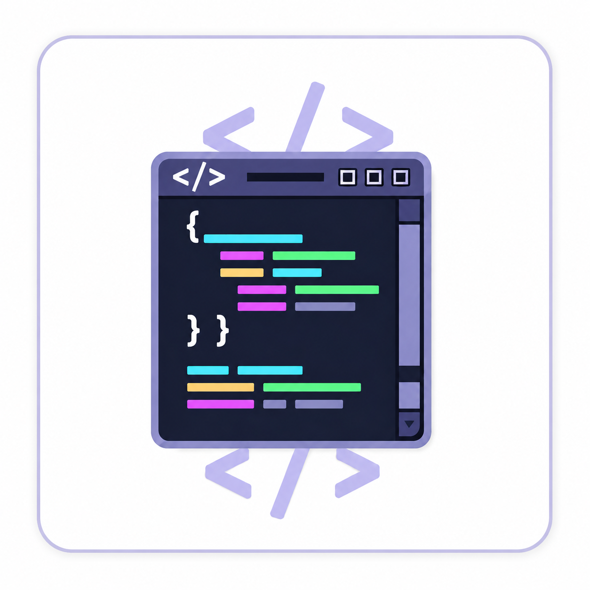
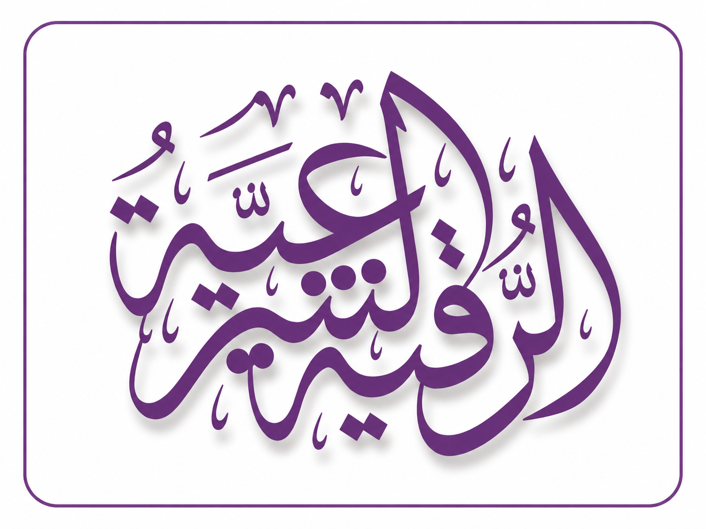

موقع بسيط لتحرير وتجربة أكواد HTML مباشرة من المتصفح، مع إمكانية معاينة النتيجة فورًا. يتميز بواجهة سهلة وسريعة تساعدك على كتابة الأكواد وتجربتها وتطوير صفحات الويب بكل سهولة.

الرقية الشرعية هو موقع يضم آيات الرقية الشرعية من القرآن الكريم بواجهة بسيطة وسهلة الاستخدام، مما يتيح للمستخدم قراءة آيات الرقية بسهولة وفي أي وقت، مع تصميم منظم يوفر تجربة استخدام مريحة وسلسة.